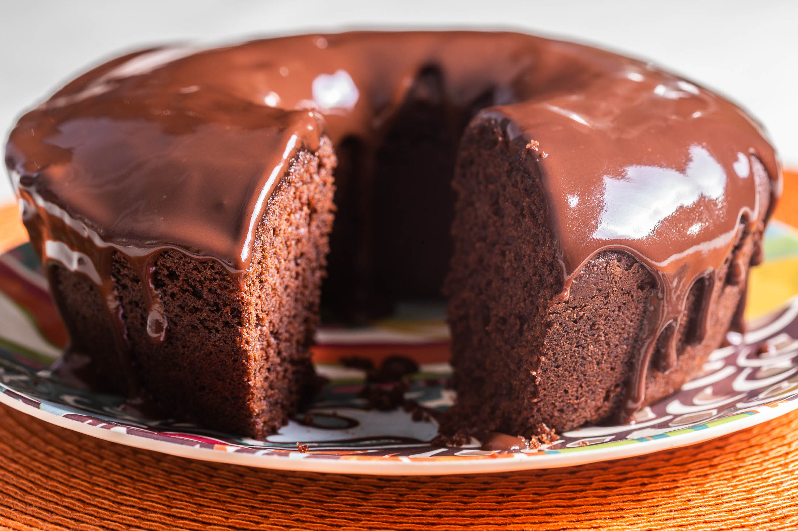

Bolo Chocolícia

Ingredientes
Massa
4 Ovos
1 Xícara de Óleo de Soja
1 Xícara de Água Morna
1 Xícara de Farinha de Trigo
1 Xícara de Chocolate em Pó ou Cacau 70%
1 Colher de Fermento em Pó
Calda
8 Colheres de Chocolate em Pó ou Cacau 70%
4 Colheres de Margarina
1 Lata de Leite Condensado
Modo de Preparo
Massa
Comece separando as gemas e as claras dos ovos
Agora, bata as claras até obter ponto de neve e reserve
Em outro recipiente, bata as gemas com o açúcar
Em seguida, acrescente a água morna, o chocolate/cacau e o óleo, e misture bem
Acrescente a farinha de trigo e bata na batedeira em velocidade alta por 3 minutos
Acrescente o fermento e mexa delicadamente
Acrescente a clara em neve e mexa até ficar totalmente envolvida na massa
Coloque a massa numa fôrma da sua preferência, untada e enfarinhada
Asse em forno pré aquecido a 180 graus por 50 minutos
Calda
Para a calda, misture a margarina, o chocolate/cacau e o leite condensado
Leve ao fogo médio mexendo sem parar, e após iniciar a fervura, cozinhe por mais 3 minutos
Desligue o fogo e espere esfriar um pouco, em seguida despeje sobre o bolo
INSCREVA-SE NO CANAL
By Renata Ferreira Barreiros Fiel